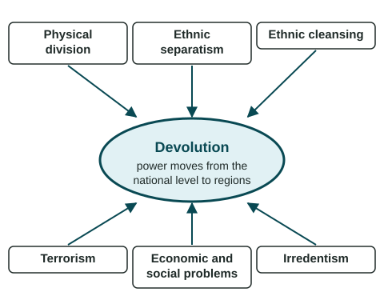

States do not always hold together. Sometimes a region wants to run more of its own affairs; sometimes it wants to leave. Devolution is the transfer of power from a national government to regional governments. It can be small (a region gets control of its schools), large (a region gets its own parliament) or complete (a region breaks away as a new state). This topic asks why it happens.
Six factors that push devolution

| Factor | What it means | Example, with its scale |
|---|---|---|
| Physical division | A region is cut off from the center by distance, water or mountains, which makes it hard to govern and easy to feel apart. | From 1947 to 1971, Pakistan had two parts about 1,600 km apart. The eastern part became Bangladesh in 1971. |
| Ethnic separatism | An ethnic group inside a state seeks independence or self-rule for the region where it lives. | Quebec in Canada; Scotland in the United Kingdom; Catalonia and the Basque Country in Spain (regional scale). |
| Ethnic cleansing | The forced removal of an ethnic group from an area by killing, terror or expulsion. | Bosnia and Herzegovina in the 1990s, as found by the International Criminal Tribunal for the former Yugoslavia. |
| Terrorism | Violence, especially against civilians, used to create fear and reach a political goal. | ETA's campaign for Basque independence, ended in 2011; the group dissolved in 2018. |
| Economic and social problems | A region feels poorer, overtaxed or treated unfairly by the center. | Some Catalans argue Catalonia pays more in taxes to Spain than it gets back. |
| Irredentism | A state claims land in another state where people of its own nation live. | Germany took the Sudetenland from Czechoslovakia in 1938. |
Ethnic separatism: the most common source
Separatism is strongest where a minority is concentrated in its own homeland, has its own language or history, and feels ignored by the national government. Quebec, where most people speak French, held referendums on leaving Canada in 1980 (40.4% Yes) and 1995 (49.4% Yes) (Elections Québec). Scotland voted in 2014: 44.7% Yes, 55.3% No (Electoral Commission). In each case No won, but the votes showed deep division. Scotland has had its own parliament since 1999, and after the 2014 vote the UK gave it more powers (Scotland Act 2016). In Catalonia, an independence vote in 2017 went ahead after Spain's courts had blocked it, and Spain's national government took direct control of the region for several months. Catalans themselves are divided: polls show many want to stay in Spain.
Separatism is a centrifugal force: it pulls a state apart. Shared institutions, money and transport are centripetal forces that hold it together. Whether a state holds depends on the balance.
When devolution turns violent
Most devolution is peaceful and happens through votes and laws. Sometimes it does not. In the 1990s, Yugoslavia broke apart in a series of wars. A UN court, the International Criminal Tribunal for the former Yugoslavia, found that ethnic cleansing took place in Bosnia and Herzegovina, and it and the International Court of Justice found that the 1995 killings at Srebrenica were genocide. Terrorism has also been used by some separatist groups, such as ETA in Spain. Most people in the regions involved did not support such violence.
Irredentism: pressure from outside
Irredentism differs from separatism because the push comes from another state. In 1938, Germany claimed and took the Sudetenland, a border area of Czechoslovakia where many German speakers lived. Somalia long claimed areas of Ethiopia and Kenya where many Somalis live, and fought Ethiopia over the Ogaden region in 1977 and 1978. In 2014, Russia annexed Crimea; as of 2026, Russia controls it, while the UN General Assembly and most states treat it as part of Ukraine. Irredentism can split a state from outside.
Reading devolution on a map
To spot devolutionary pressure, look for a minority group concentrated in one region, especially one far from the capital or across water. Name the scale: a map of provinces shows data at the subnational scale, even when it covers a whole country.